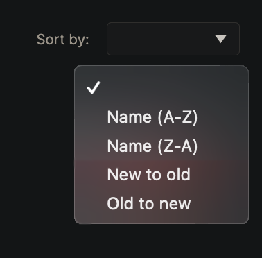

Hear ye! Hear ye! New UDFs for List management are here!
If you need more advanced processing, check out the advanced List Processing UDFs:
- List of JSON to HTML
- Recursive processing of nested Lists of JSON
- Recursive processing of data contained in a List of JSON
- CSV data to List of JSON
- List of CSV rows to HTML table
- List of JSON to CSV
- Filter List of JSON by List of Text
LIST#PUSH()
As explained in the List Data Type docs, there’s no direct Airscript equivalent to the .push() or .append() methods.
Here’s a neat little UDF Body that will push a new item into a list:
FROM item IN FLAT([ list, new_item ]) WHERE ISNOTEMPTY(item) SELECT DISTINCT item
UDF Breakdown
The first (well-known) bit of this UDF is
FLAT([ list, new_item ])
Which takes
- a List of items -
list = [ item_1, item_2 ] - adds a new item -
[ list, new_item ] = [[ item_1, item_2 ], new_item] - flattens the resulting list -
[ item_1, item_2, new_item ]
Considerations
-
What happens if the
listis empty? Meaning what if our starting list is:list = [ ]This is where the following comes into play, selecting items that are not empty:
WHERE ISNOTEMPTY(item) -
What happens if I’m using this method to append items to a list, but I want to make sure that the same item is not added more than once?
To make sure the same item is not added more than once to our list, we use
SELECT DISTINCT
TIP: Play around with this simple UDF to handle Marketplace-like lists, where the requirement might be to display SELECT DISTINCT only the items can be added more than once, incrementing the number of a certain item in our shopping cart.
LIST#REMOVE()
Just as often as we need to push/append new items into existing lists we might need to remove an item at [index] from the list.
Like the LIST#PUSH() UDF, the LIST#REMOVE() UDF is a simple, but useful one.
The UDF has two inputs:
-
list- Datatype: List of JSON -
item_index- Datatype: Number, the index at which the item to be removed resides
The UDF’s Body is
FROM item IN list WHERE NOT(index = item_index) SELECT item
And the output is Datatype: List of JSON.
{kind=link}
LIST#SORT_BY()
So, you have a list of JSON objects that populates a grid (Repeater) in your UI; how can you enable your users to sort by different object fields either Ascending or Descending?
Let’s work on some UDF magic to get that sorted out (pun intended )
Using UDFs to sort your lists means all data processing stays on the client-side which is faster and relatively seamless (better UX) as opposed to using Data Flows to do the same.
Data Flows run on Airkit servers, meaning the information needs to be sent to the server to be processed, then sent back to the client to be displayed to the users; and are better suited to run backend processes (Data Ops).
Use Case
As an example, let’s say the grid is populated with a List of JSON where each object has the following structure:
[
{
"name": "Super Awesome Hoodie",
"sales": 1734,
"added_timestamp": {
"date": {
"year": 2022,
"month": 3,
"day": 5
},
"time": {
"hour": 2,
"minute": 29,
"second": 46,
"millisecond": 127
},
"timeZone": "UTC"
},
"views": 7543
},
{
"name": "Magic Carpet",
"sales": 3853,
"added_timestamp": {
"date": {
"year": 2022,
"month": 3,
"day": 5
},
"time": {
"hour": 1,
"minute": 30,
"second": 2,
"millisecond": 848
},
"timeZone": "UTC"
},
"views": 9124
}
]
And we want to have one of those good old Sort by dropdown lists in our Web Page

We’ll set the following List of JSON as the Dropdown control’s data binding
[
{
"display": "Name (A-Z)",
"value": "name ascending"
},
{
"display": "Name (Z-A)",
"value": "name descending"
},
{
"display": "New to old",
"value": "added_timestamp descending"
},
{
"display": "Old to new",
"value": "added_timestamp ascending"
}
]
Where display contains the value displayed to the user in the UI, and value contains both the field name to sort by and the order to user for sorting (either ascending or descending).
Building the UDF
Basic sorting
Let’s look at the basics of sorting a list of objects by a given field. We’ll call the List of JSON objects list, and we’ll sort by name Ascending. Using AirData Querying Capabilities we can do:
FROM item IN list ORDER BY item.name ASCENDING SELECT item
Which will return the same List of JSON but ordered by the name field.
Parameterizing the field to sort by and the order
Now that we have the basic sorting expression, we can use a conditional to set the sorting order and the ["{{field_name}}"] syntax to parameterize the field name to sort by.
UDF Definition
-
The UDF needs to have two inputs:
-
list(Datatype: List of JSON) - List of JSON objects used to populate the UI grid -
sort_by(Datatype: Text) - String representing the selected sorting option’svalue
-
-
The Output of the UDF will be of Datatype: List of JSON
-
The UDF’s Function Body will look like
IF( SPLIT(sort_by, " ")[1] = "ascending", FROM item IN list ORDER BY item["{{SPLIT(sort_by, " ")[0]}}"] ASCENDING SELECT item, SPLIT(sort_by, " ")[1] = "descending", FROM item IN list ORDER BY item["{{SPLIT(sort_by, " ")[0]}}"] DESCENDING SELECT item )UDF sorting breakdown
The UDF’s body contains an IF() statement to control whether the
listcontents should be ordered Ascending or Descending.
Let’s dig into the next bit.
Remember we’re only getting thevaluefrom the Sort By drop down. Using the SPLIT() Airscript function we can get the order to use for sorting.SPLIT(sort_by, " ")[1]If the user selected Old to new, the
valuewill be"added_timestamp ascending", and the output of the above expression will beascending. We’ll use this value to select which of the cases of the IF() will be executed.
The same SPLIT() Airscript function can be used to get the field name to sort the list bySPLIT(sort_by, " ")[0]Whose output will be
added_timestampLast but certainly not least, we’re using that expression to fetch the object field’s name to sort by
FROM item IN list ORDER BY item["{{SPLIT(sort_by, " ")[0]}}"] ASCENDING SELECT item
{kind=link}
TIP: play around with the object["{{variable_name}}"] syntax to dynamically access/set fields of a JSON object.